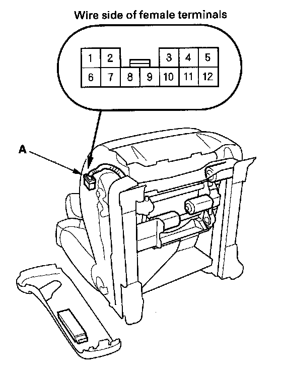
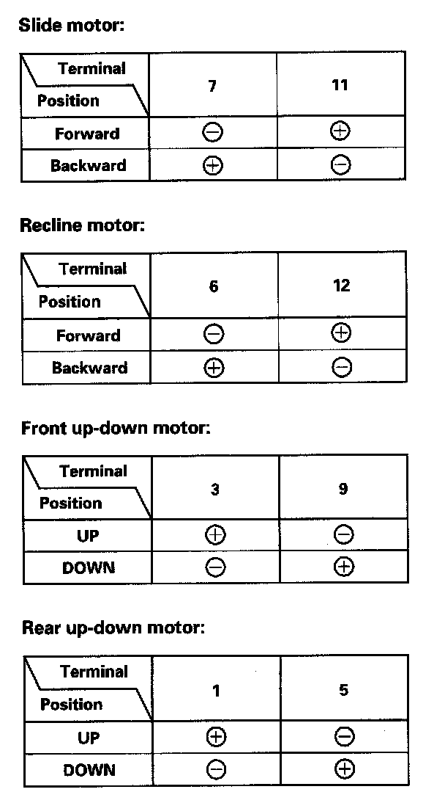

Front Passenger's Power Seat Motor Test
Front Passenger's Power Seat Motor Test1. Remove the front passenger's seat.

2. Remove the power seat adjustment switch and disconnect the 12P connector (A) from the switch.

3. At the power seat adjustment switch 12P connector, test the motor by applying battery power and ground to the terminals according to the table.
4. If the motor does not run or fails to run smoothly, check for an open in the front passenger's seat wire harness between the power seat adjustment switch and each motor. If the wire harness is OK, replace the appropriate motor.
NOTE: The motors are not available separately. The slide and up-down motors are part of the slide/up-down adjuster. The recline motor is part of the recline adjuster.